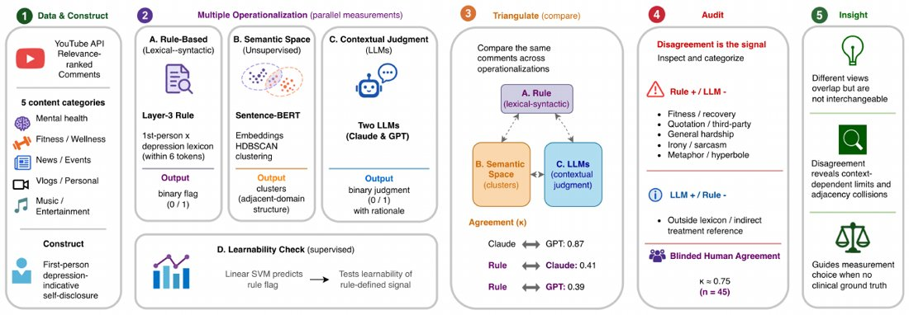

A Triangulate-and-Audit Framework for Measuring Depression-Indicative Self-Disclosure in YouTube Comments
Rosemary Li, Nuo Chen, Shenghan Gao, Zhihan Jiang
WellComp Workshop at UbiComp/ISWC 2026 · Accepted
We study how to measure depression-indicative self-disclosure in YouTube comments through a framework that combines multiple operationalizations, triangulation, and audit.
